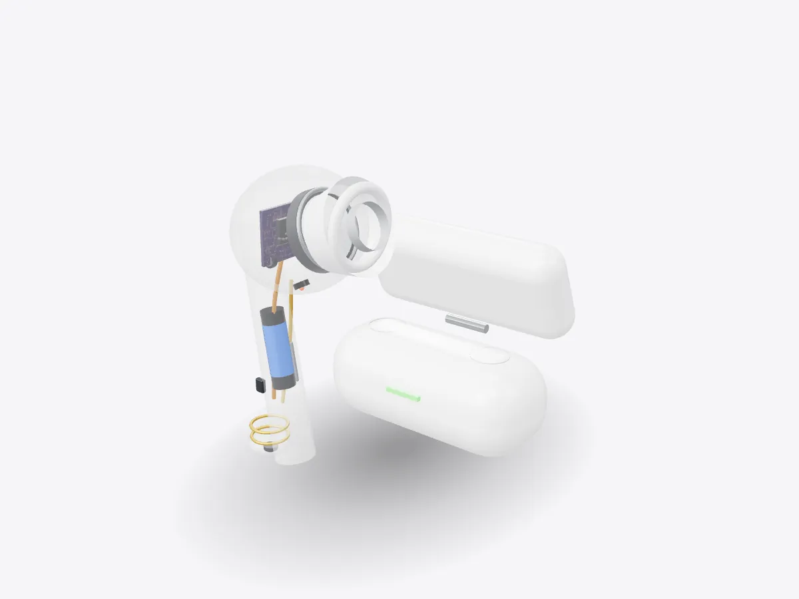

01 / 05
Overview
10 parts, one idea.
See how wireless earbuds work in 3D: driver, battery, microphones, antenna and charging case. Explode them, slice them and learn how noise cancelling works.
Drag to orbit, pinch or scroll to zoom, tap any part.
How it works · Tech
A speaker, a radio, a computer and a battery, squeezed into something smaller than a grape. Open one up, layer by layer.

Scores are saved on this device only.
01 / 05
Overview
See how wireless earbuds work in 3D: driver, battery, microphones, antenna and charging case. Explode them, slice them and learn how noise cancelling works.
Drag to orbit, pinch or scroll to zoom, tap any part.
02 / 05
Explode
Keep scrolling and every part slides away from the centre, so you can see how they fit together.
03 / 05
Slice
A section plane sweeps through the model as you scroll. Pick an axis and set the depth yourself.
04 / 05
Parts
Pick a part or tap a glowing dot. It lights up and everything else fades back.
05 / 05
Facts
Bluetooth is named after Harald "Bluetooth" Gormsson, a 10th-century Danish king.
Earbuds talk to your phone in the same radio band as Wi-Fi.
Noise cancelling adds an inverted copy of outside sound so the waves cancel.
Explained
Wireless earbuds look simple from the outside, but each one is a complete audio system. Inside the shell there is a speaker driver, a rechargeable battery, several microphones, a Bluetooth radio and a small computer that ties them together. Your phone sends compressed audio over Bluetooth. The earbud's chip decodes it, applies any equalisation or noise cancelling, and drives the speaker.
The speaker, called a driver, works like a full-size loudspeaker. A coil of very fine wire is attached to a thin diaphragm and sits in the field of a small permanent magnet. When the audio signal flows through the coil it becomes an electromagnet, pushed and pulled by the fixed magnet, so the diaphragm moves back and forth and pushes the air in your ear canal. The silicone tip seals the canal, which is why a good fit sounds so much fuller in the bass.
Active noise cancelling uses microphones on the outside of the bud to listen to the sound around you. The processor creates a copy of that sound that is inverted, so its peaks line up with the troughs of the original. When both reach your ear they cancel each other out through destructive interference. A second microphone inside the bud checks what is left and corrects the result. It works best on steady, low sounds like engine hum.
The same microphones handle calls. They are spaced apart so the processor can compare their signals and focus on sound coming from your mouth. Transparency mode does the opposite of noise cancelling, feeding outside sound through so you can hear traffic or a conversation.
The battery in each bud is tiny, usually a lithium-ion cell holding only a small fraction of the energy in a phone battery, so efficiency matters everywhere. The antenna sits in the stem, away from your head, because the body absorbs 2.4 GHz radio waves. The technology is named after a 10th-century Danish king, Harald Bluetooth, who united tribes, much as the standard was meant to unite devices.
The charging case is really a power bank. Magnets pull each bud into place so two metal contacts on the stem touch spring-loaded pins, and the case's larger battery tops the buds up. This model is a generic illustration, not any particular brand. Use Explode to separate the parts, or open Play to remove each layer in turn.
D3DDD
D3DDD makes them: product cutaways, exploded views, architectural renders and technical drawings.